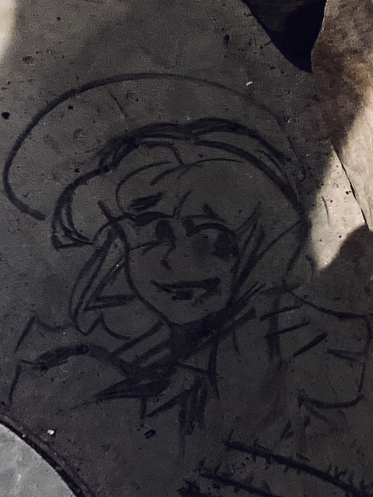

◊JOURNAL
a spur-of-the-moment thoughts dump / microblog-adjacent
2-15-24 | dead times
decided to revist an old OC playlist i hadn't listened to in a hot minute and 'spare hearts' from catghost ost switched on and i nearly jumped out of my seat
i suddenly remembered how much this story used to influence my own OCs and how i can't stand it now because of an unrelated event that happened around that time. i can say that for so many other medias too, it's unreal that up until now, i've never quite comprehended just how pieces of media that i haven't watched or thought of in years that still show their faces in the things i make to this day. how PTC's power/weapon system still has vague correlations to a glitchtale AU [ew] i made when i was 14, how 'law of talos' was the direct inspiration for callisto and marcene but i can't even stand to watch either of them anymore, among others because of [unrelated].
reminded bitterly that many of my stories are created on the backs of inspos that were accumulated over multiple years from all corners of my life and no matter what, i will never not be able see myself through my works, no matter how mundane they are or how much i do not want to be reminded of certain aspects from dead times.
it feels very silly to say all of this about pieces of writing that i'll probably never publicize at all, but regardless of that, death of the author feels reaaally far away from me.2-6-24 | site status
i think that this site is nearing a 'complete' state. with my more recent artworks, i feel less of an urge to post/archive them here on neocities. with how selective i feel about art-posting going into 2024, i feel like i've grown beyond this site, and i'm no longer compelled to use it in the way that i've been using it in 2023. after i finish uploading jan-feb(?)'s batch of artwork, this site will probably go through a revamp- i don't have any specific plans, i just think i need to do something *different.* all artwork will stay up, of course, tho the exterior and main 'purpose' will probs change a tad.
2-3-24 | lobotomycore
a giomi i drew on the floor with a piece of burnt wood immediatly after recieving a minor head injury
1-9-24 | new layout, how we feeling?
I DONT KNOW!! i dont know how i feel abt this one tbh. my main intent going into this was to tidy up file paths, but to more importantly, clean up the mobile version of the site. something that REALLLY bugged me abt the old layout was the fact that, since all of the main content was inside of a scrollable div instead of the ‹main› tag, the search bar in mobile browsers wouldn't HIDE when you scrolled down the page. and considering x & y overflow were hidden too, this caused a lotta visual disparity for the main content block depending on the phone screen's size. this new layout was my attempt to fix that.
i'll have to test out how it looks on more devices to be 100% sure, but im v sure this issue has been solved now. a part of me really misses the smaller, more compact look though. it's not all that different actually, but the old one was specifically more... rounder imo. i'll probably tweak the layout some more later down the line to get that vibe back, but we'll see.
old version for comparison:

new vers is also inspired by debtdeath's site too, pls give them some love :,D